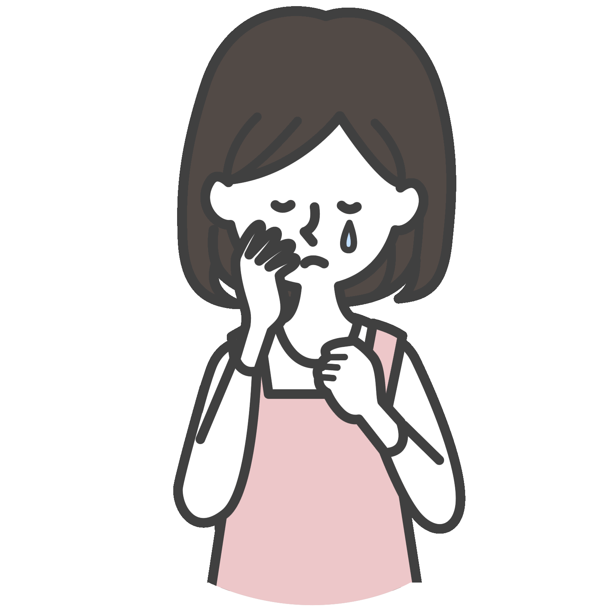
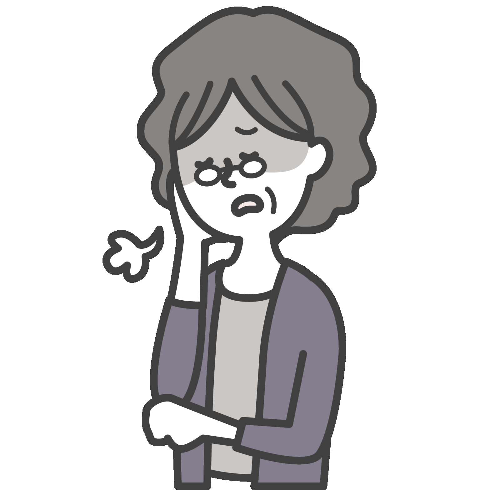

WEB予約
WEB予約お知らせ
NEWS
- 2023.12.1
- 2023-2024 年末年始の診療時間について
- 2023.4.6
- ゴールデンウィーク期間中の診療日時について
- 2032.2.17
- 3月接種 インフルエンザワクチンについて
当クリニックの特徴
FEATURES
124時間365日いつでもWEB予約可能
WEBの診療受付は
24時間毎日受け付けております。
電話予約の方は
診療時間内のみとなっております。
※当院は児童精神科医が在籍していないため、
16歳以上の患者様に限らせていただきます。
2専門家がサポート
心療内科のプロがサポート
心の健康に関する
安心と理解を
提供いたします。
3なんでも話せる医師
健康や医療に関する疑問、
相談はお気軽に。
患者様の健康を
全力でサポートします。
4土日・祝日も予約可能
忙しい日でも安心
当日のご予約も可能。
お気軽にお電話・ WEBご予約
受け付けております。
5各種診断書の即日発行
最短で当日中に
診断書・各種書類を発行可能です。
まずはご予約をお取りいただき、
医師へご相談ください。
※診断書発行には別途手数料がかかります。
※内容や混雑状況により当日の発行が出来ない場合もございます。
院長紹介
DIRECTOR
長田 修二 ながた しゅうじ
医療大学を卒業後、長きにわたり
診療内科での経験を積み、
患者の心の健康に専念。
心理学の専門家として、個別のニースに合わせた包括的な治療を提供。
豊富な知識と深い理解に裏打ちされた、
患者様の気持ちに寄り添いながら、
同じ目線で対話をしていくよう心がけています。
このような症状はありませんか？
頭がいつも不安でいっぱい

いつも疲れてやる気が出ない
不眠・食欲がない

学校・職場の
人間関係に困っている


診療時間
MEDICAL HOURS
土日・祝日も診療中
| 診療時間 | 月 | 火 | 水 | 木 | 金 | 土 | 日 |
|---|---|---|---|---|---|---|---|
| 10:00～13:00 | ⚫︎ | ⚫︎ | ⚫︎ | ー | ⚫︎ | ⚫︎ | ⚫︎ |
| 14:00～19:00 | ー | ⚫︎ | ⚫︎ | ⚫︎ | ⚫︎ | ⚫︎ | ⚫︎ |
※最終受付
午前12:30まで
午後19:30まで